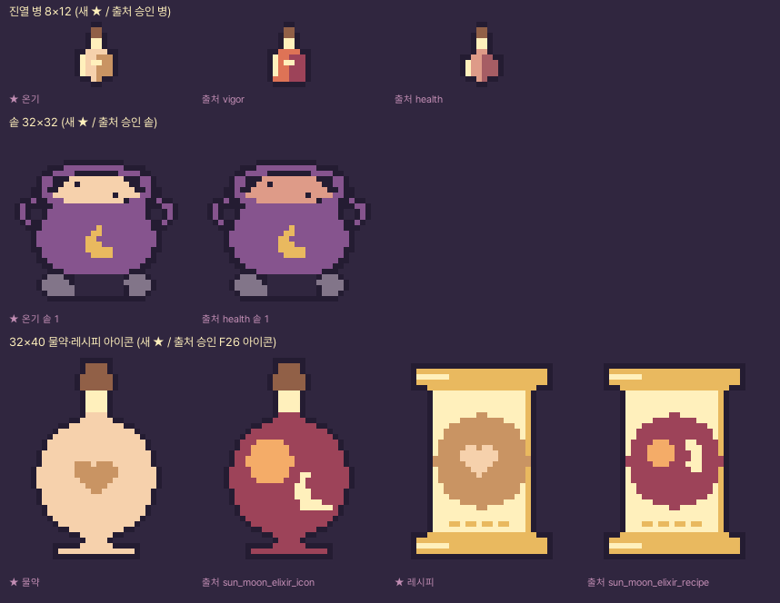
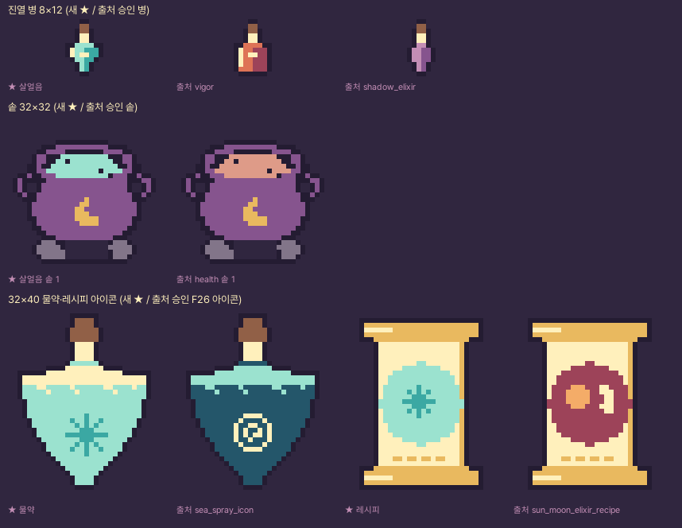
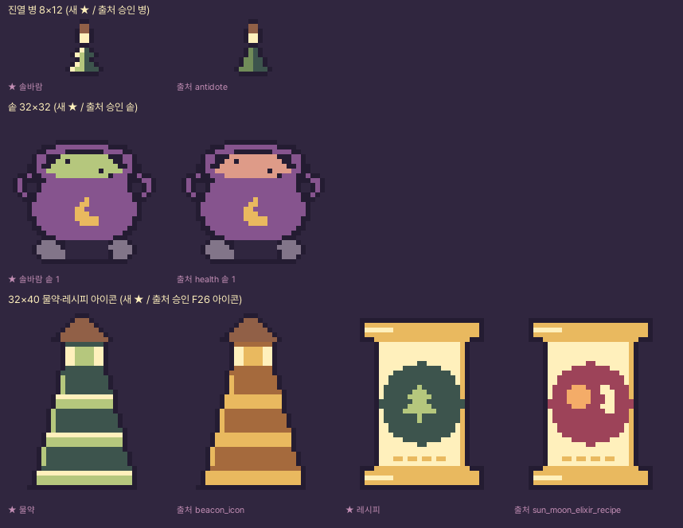
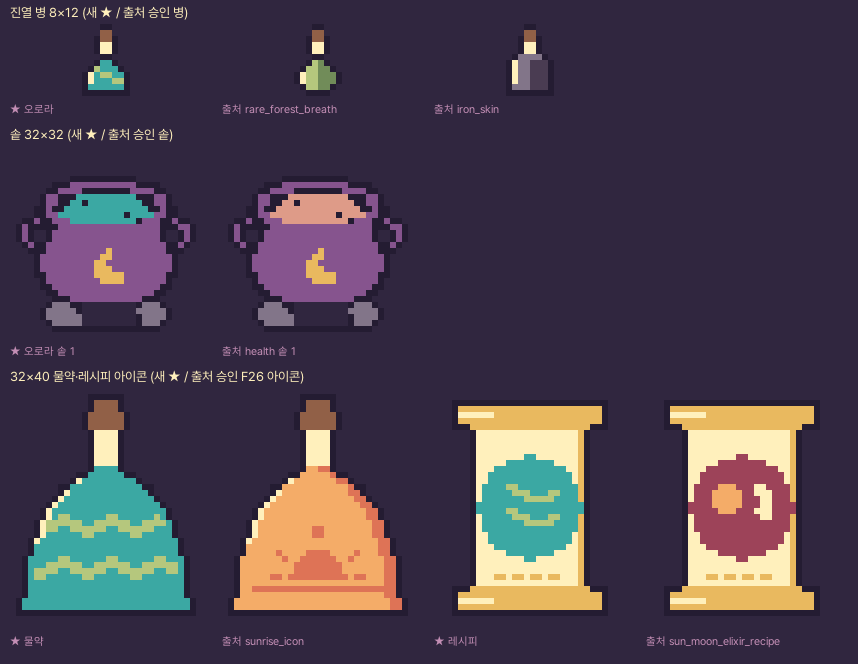
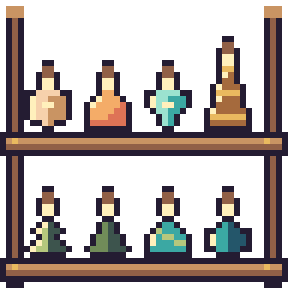
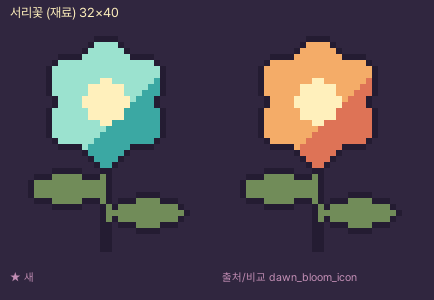
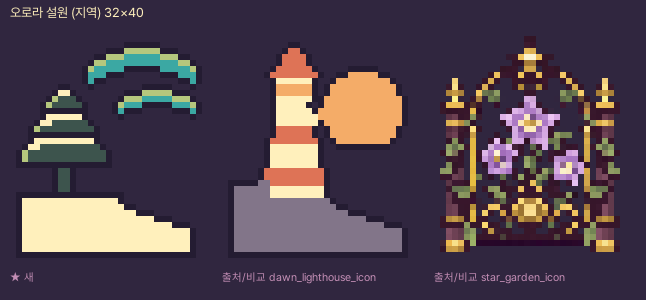
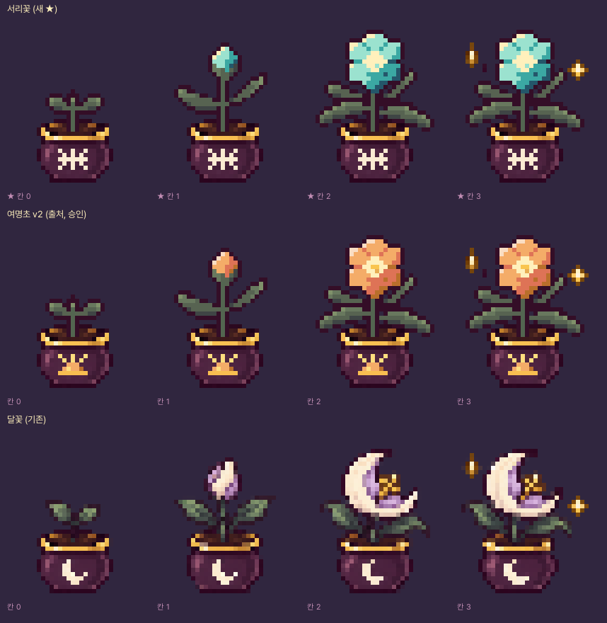

10번째 원정 지역 「오로라 설원」 · 새 재료 서리꽃 · 새 물약 4종 아트 후보 v1
2026-11-05 · 상태 후보(candidate) · 게임 미연결 · 승인 전 · 기획 docs/새-원정-지역과-물약-F27-기획안.md · 검사 통과
1. 새 물약 4종 · 출처 승인 그림과 나란히 (6배)
온기 물약 · 활력 계열 · 여행자 선호
병 활력 계열 `vigor`의 0~9행(각진 어깨·안쪽 반짝임, 꿀단지 몸통) + 첫 물약 `health`의 10~11행(작은 굽). 살구 크림 + 꿀빛.
아이콘 승인된 F26 일월의 물약 아이콘(받침 둥근 병) 실루엣 그대로, 몸통을 살구 크림으로, 해·달 문양 자리에 꿀빛 하트.
레시피 승인된 F26 레시피 두루마리 그대로, 인장 원을 꿀빛으로, 안쪽 문양을 살구 크림 하트로.

병 출처: vigor 0~9행 + health 10~11행 · 손으로 바꾼 픽셀 0개 ·
솥 몸체 #86548E와 ΔE 67.6 · F26 4종과 최소 ΔE 26.9 ·
같은 액체색 기존 물약 restoration, regeneration · 검사 통과
살얼음 물약 · 기교 계열 · 고양이 도적 선호
병 활력 `vigor`의 0~7행(넓은 어깨·안쪽 반짝임) + 그림자 `shadow_elixir`의 8~11행(뾰족한 아래) = 고드름처럼 아래로 좁아지는 병. 얼음 민트 + 청록.
아이콘 승인된 F26 물보라 아이콘(거꾸로 된 물방울) 실루엣 그대로, 몸통을 얼음 민트로, 물거품 띠를 크림 서리로, 소용돌이 자리에 청록 눈송이.
레시피 두루마리 그대로, 인장 원을 얼음 민트로, 문양을 청록 눈송이로.

병 출처: vigor 0~7행 + shadow_elixir 8~11행 · 손으로 바꾼 픽셀 0개 ·
솥 몸체 #86548E와 ΔE 75.3 · F26 4종과 최소 ΔE 56.5 ·
같은 액체색 기존 물약 purify, focus, clarity, spirit, soul_purification, reflection, rare_mist_veil · 검사 통과
솔바람 물약 · 자연 계열 · 엘프 선호
병 해독 `antidote`(위로 좁은 병)의 7·8행 순서만 바꿔 2단 소나무 층을 만들고, 층마다 왼쪽 위 1픽셀을 크림 눈으로. 새싹 빛 + 그늘 잎.
아이콘 승인된 F26 등대불 아이콘(층층이 넓어지는 탑) 실루엣 그대로, 몸통을 그늘 잎·띠를 새싹 빛으로, 띠마다 첫 줄을 크림 눈으로.
레시피 두루마리 그대로, 인장 원을 그늘 잎으로, 문양을 새싹 빛 소나무로.

병 출처: antidote 0~6행 + antidote 8~8행 + antidote 7~7행 + antidote 9~11행 · 손으로 바꾼 픽셀 4개 ·
솥 몸체 #86548E와 ΔE 83.8 · F26 4종과 최소 ΔE 38.8 ·
같은 액체색 기존 물약 growth, worldtree_elixir, rare_forest_breath · 검사 통과
오로라의 물약 · 비술 계열 · 여마법사 선호
병 특별 `rare_forest_breath`의 0~9행(종 모양 윗부분) + `iron_skin`의 10~11행(평평한 바닥) = 평평한 바닥의 종. 청록 몸통에 새싹 빛 띠 2줄(오로라).
아이콘 승인된 F26 해돋이 아이콘(평평한 바닥의 돔) 실루엣·왼쪽 반짝임 그대로, 몸통을 청록으로, 해·수평선 자리에 새싹 빛 물결 띠 2줄.
레시피 두루마리 그대로, 인장 원을 청록으로, 문양을 새싹 빛 물결 2줄로.

병 출처: rare_forest_breath 0~9행 + iron_skin 10~11행 · 손으로 바꾼 픽셀 17개 ·
솥 몸체 #86548E와 ΔE 67.7 · F26 4종과 최소 ΔE 37.4 ·
같은 액체색 기존 물약 mana, nightwalk · 검사 통과
2. 진열장 · 솥 합성
승인 선반(v4 48×48) 위: 윗칸 새 4종, 아랫칸 F26 4종 / 섞어서 진열. 6배.

솥 + 화덕 불(검토용 근사 배치, 6배): 기존 체력 솥 · F26 4종 · 새 4종.
3. 재료·지역 아이콘 (6배)
서리꽃 (재료)
승인된 F26 여명초 아이콘 그대로(꽃잎 6장·꽃심·줄기·잎 2장), 꽃잎만 얼음 민트/청록으로 다시 칠함. 잎·꽃심 색은 그대로.

검사 통과
오로라 설원 (지역)
승인된 F26 새벽 등대 아이콘의 땅(29~38행)을 그대로 쓰고 돌색을 눈(크림)으로. 등대 자리에 눈 덮인 3층 소나무, 해 자리에 청록·새싹 빛 오로라 띠.

검사 통과
4. 서리꽃 화분 성장 그림 64×80
사용자가 2026-11-05 '연결해줘'로 승인한 여명초 성장 그림 v2(달꽃 화분 픽셀 그대로 + 손으로 그린 식물)를 그대로 복사하고, v2의 식물 글자 지도로 꽃잎 픽셀만 골라 다시 칠했다(잎·줄기·화분·반짝임은 그대로). 화분 앞 해돋이 문양은 같은 자리·같은 금빛의 눈송이로 바꿨다. 바뀐 픽셀 349개 · 실루엣 v2와 동일 예 · 반투명 0개 · 색 207개(기존 성장 그림과 같은 규칙 밖 예외).

5. 진열 병 실루엣
- 온기: 같은 실루엣 기존 병 0개 · 가장 가까운 병 health(4픽셀 다름), regeneration(4픽셀 다름), nightwalk(6픽셀 다름)
- 살얼음: 같은 실루엣 기존 병 0개 · 가장 가까운 병 sea_spray(4픽셀 다름), eternity(6픽셀 다름), reflection(8픽셀 다름)
- 솔바람: 같은 실루엣 기존 병 0개 · 가장 가까운 병 antidote(4픽셀 다름), spirit(6픽셀 다름), mana(10픽셀 다름)
- 오로라: 같은 실루엣 기존 병 0개 · 가장 가까운 병 mana(6픽셀 다름), rare_forest_breath(6픽셀 다름), sunrise(6픽셀 다름)
6. 색 거리 (CIE76 ΔE)
| 물약 | 솥 액체 | 솥 몸체 #86548E | F26 4종 | 같은 색을 쓰는 기존 물약 | 새 4종끼리 |
|---|---|---|---|---|---|
| 온기 물약 | #F6D1AC | 67.6 | sunrise 26.9, beacon 39.3, sea_spray 67.7, sun_moon_elixir 57.9 | restoration, regeneration | thin_ice 39.8, pine_wind 29.7, aurora_elixir 54.4 |
| 살얼음 물약 | #9BE2CF | 75.3 | sunrise 63.2, beacon 65.5, sea_spray 56.5, sun_moon_elixir 79.2 | purify, focus, clarity, spirit, soul_purification, reflection, rare_mist_veil | warmth 39.8, pine_wind 34.6, aurora_elixir 24.2 |
| 솔바람 물약 | #B5C77D | 83.8 | sunrise 38.8, beacon 46.0, sea_spray 67.8, sun_moon_elixir 74.2 | growth, worldtree_elixir, rare_forest_breath | warmth 29.7, thin_ice 34.6, aurora_elixir 46.0 |
| 오로라의 물약 | #3BA8A3 | 67.7 | sunrise 73.7, beacon 66.5, sea_spray 37.4, sun_moon_elixir 75.5 | mana, nightwalk | warmth 54.4, thin_ice 24.2, pine_wind 46.0 |
아직 액체로 쓰지 않은 팔레트 색(쓰지 않은 이유):
- #3D544D 솥 몸체와 ΔE 49.3 · F26과 최소 ΔE 17.8
- #4A3C52 솥 몸체와 ΔE 28.5 · F26과 최소 ΔE 22.6
- #50315F 솥 몸체와 ΔE 19.0 · F26과 최소 ΔE 34.8
- #50333B 솥 몸체와 ΔE 34.5 · F26과 최소 ΔE 30.4
- #86548E 솥 몸체와 ΔE 0.0 · F26과 최소 ΔE 30.9
- #A65D64 솥 몸체와 ΔE 33.3 · F26과 최소 ΔE 12.0
- #C99463 솥 몸체와 ΔE 63.7 · F26과 최소 ΔE 15.9
7. 스스로 본 판단 · 결정 필요
- 병은 모두 승인 병의 행을 이어 붙였으므로 선반에서 기존 병과 같은 그림체로 보인다. 대신 실루엣 차이가 작다(가장 가까운 기존 병과 4~6픽셀 차이, 위 5절). 색과 함께 보면 구분되지만 실루엣만으로는 약하다. 특히 살얼음은 F26 물보라와 같은 '아래로 뾰족한' 계열이고, 오로라는 마나와 같은 종 모양 청록 계열이다. 온기와 살얼음은 둘 다 `vigor`의 윗부분(0~7행)을 쓴다.
- 32×40 아이콘 4종은 F26 아이콘과 실루엣이 같다(색·문양만 다름). 관리 화면 레시피 목록에서 해돋이↔오로라, 등대불↔솔바람, 물보라↔살얼음, 일월↔온기가 같은 모양으로 나란히 보인다. 그대로 둘지, 실루엣을 조금 바꾼 v2를 만들지 결정 필요.
- 서리꽃 재료 아이콘과 성장 그림은 여명초와 모양이 같고 꽃잎 색만 다르다.
- 지역 아이콘의 소나무·오로라 띠는 새로 그린 부분이다(땅만 승인 픽셀). 이 아이콘이 가장 '새 그림'에 가깝다.
- 살얼음(얼음 민트 #9BE2CF)과 오로라(청록 #3BA8A3)는 ΔE 24.2로 새 4종 중 가장 가깝다. 솥에서 둘 다 청록 계열로 보일 수 있다.
검사 결과: validation.json · 후처리 원본 보고: pipeline/validation.json · 승인 상태: approval.json · 재현: tools/build_f27_region_potions_v1.py